1과목: 응용역학
1. 지점 A에서의 수직반력의 크기는?
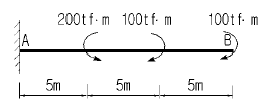
2. 다음과 같은 부재에 발생할 수 있는 최대 전단응력은?
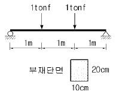
3. 3연 모멘트의 사용처로 가장 적당한 곳은?
4. 다음의 트러스에서 부재력이 0인 것은 몇개 인가?
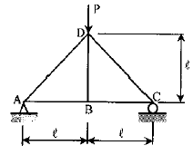
5. 다음 단면의 도심
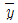
를 구하면?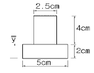
6. 단순보에 등분포 하중이 그림과 같이 작용할 때 최대 처짐량은 얼마인가? (단, EI는 일정)
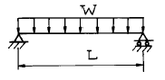
7. 그림과 같은 보의 지점 B 의 반력 RB 는?
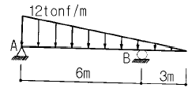
8. P1, P2가 0(zero)으로 부터 작용하였다. B점의 처짐이 P1으로 인하여 δ1, P2로 인하여 δ2가 생겼다면 P1이 하는 일은?
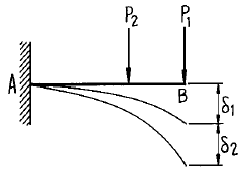
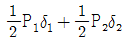
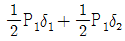
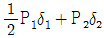
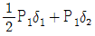
9. 각각 10cm의 폭을 가진 3개 나무토막이 그림과 같이 아교풀로 접착되어 있다. 4500kgf의 하중이 작용할 때 접착부에 생기는 평균 전단응력은?
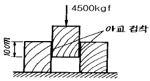
10. 그림과 같은 구조물에서 T가 받는 힘의 크기는?
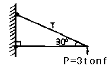
11. 지름 D, 길이 ℓ 인 원기둥의 세장비는?
12. 다음 단면에서 y축에 대한 회전반지름은?
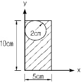
13. 동일한 재료 및 단면을 사용한 다음 기둥 중 좌굴하중이 가장 작은 기둥은?
14. 스팬 ℓ 인 양단 고정보의 중앙에 집중하중 P가 작용할 때 고정단의 모멘트의 크기는?
15. (축과 직각방향의 변형도/축방향의 변형도)를 무엇이라고 하는가?
16. 그림과 같은 캔틸레버보의 자유단에 단위처짐이 발생하도록 하는데 필요한 등분포하중 w의 크기는? (단, EI는 일정하다.)
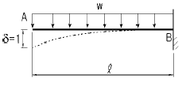
17. 그림과 같은 단순보에서 최대 휨응력값은?
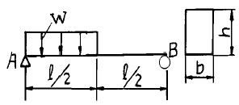
18. 축방향력 N, 단면적 A, 탄성계수 E일 때 축방향 변형에너지는?
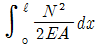
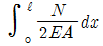
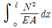
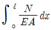
19. 직경 D인 원형 단면보에 휨모멘트 M이 작용할 때 휨응력은?
20. 그림과 같은 트러스에서 꿴 부재의 부재력은?
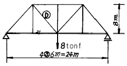
2과목: 측량학
21. 직사각형 모양의 토지면적을 1/1,000정확도로 산출할려면 변길이의 측정 정확도는 얼마로 측정해야 하는가?
22. 클로소이드의 기본식은 A2 = R· L을 사용한다. 이때 매개변수(parameter) A값을 A2으로 쓰는 이유는 무엇인가?
23. 다음은 하천의 유량측정 방법을 설명한 것이다 옳지 못한 것은?
24. 사진측량의 표정에 대한 설명 중 옳지 않은 것은?
25. 교점(I.P.)의 위치가 기점으로부터 200.12m, 곡률반경 200m, 교각 45° 00′ 인 단곡선의 시단현의 길이는? (단, 측점간 거리는 20m로 한다.)
26. 삼각측량을 실시하기 위하여 측점 O에 기계를 세우고 각 관측법으로 측량할 경우 관측각의 수는?
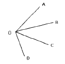
27. 스타디아측량을 한 결과 협장이 50cm, 고저각 30° 로 수평거리 80m를 얻었다. 이 관측결과에서 시거정수(K)에 0.4의 오차가 포함되어 있다면 이 오차가 거리에 미치는 영향은? (단, K=100 , C=0)
28. 항공사진의 기복변위에 대한 설명중 잘못된 것은?
29. 중력 측량시 이용되는 수준점은 다음 중 무엇을 기준으로 하는가?
30. 각각의 변장거리가 다음 그림과 같을 때 편심이 발생한 0′ 지점에서의 오차보정량은 얼마인가?
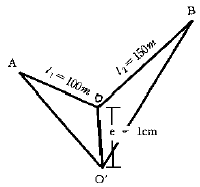
31. 평판측량을 할 경우 기지의 A, B 점을 이용하여 미지점 C의 위치를 결정하고자 한다. 이때 기지점 B에 기계를 설치할 수 없어 기지점 A와 미지점 C에 기계를 설치하여 미지점 C의 위치를 결정하는 방법은?
32. 눈의 높이가 1.6m이고, 빛의 굴절계수가 0.15일 때 해변에서 바라볼 수 있는 수평선까지의 거리는? (단, 지구반경은 6,370km이다.)
33. 다각측량에서 관측각을 ± 4″ , 거리를 1/10,000의 정도로 관측하였다. 두 관측값에 경중률(輕重率)을 붙인다면 각 의 경중률(輕重率)과 거리의 무게의 비는?
34. 삼각망중에서 조건식이 가장 많이 생기는 망은?
35. 다음 완화곡선에 대한 설명 중 잘못된 것은?
36. 완화곡선의 길이(L)이 캔트와 비례인 경우 완화곡선길이를 구하는 식으로 알맞는 것은? (단, V : 속도, R : 곡률반경, S : 레일간 거리, g : 중력가속도, N : 완화곡선과 캔트와의 비)
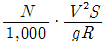
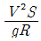
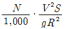
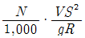
37. 그림과 같이 4점을 측정하였다. 이 때 배면적을 구한값 중 옳은 것은 어느 것인가?
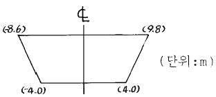
38. 등고선에 대한 설명중 옳지 않은 것은?
39. 우리나라 도로기울기의 표시방법은?
40. 각관측 과정에서 관측점을 시준할 때 시준오차는 ± 20″, 읽기 오차는 ± 10″ 라고 할 때 한 방향 관측에 따른 각관측 오차는 얼마인가?
3과목: 수리학
41. 그림과 같이 하안으로부터 10m떨어진 곳에 높이가 1m인 평행한 집수암거를 설치하였다. 투수계수를 0.5㎝/sec로 할 때 이 집수암거 1m당의 집수량은 몇 m3/sec인가? (단, 물은 하천으로부터만 침투하는 것으로 한다.)
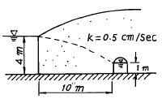
42. 부력의 표시가 잘못된 것은?
43. 강우 강도 I, 침투율 fi, 침투수량 Fi, 토양 미흡량 Md라고 하면 중간 유출과 지하수 유출이 시작되며 수로상 강수와 함께 수문곡선을 그릴수 있는 조건은?
44. 다음 중 베르누이의 정리를 응용한 것이 아닌 것은?
45. 가능최대강수량에 대한 설명중 틀린 것은?
46. 안지름 200㎜의 관에 대한 조도계수 n = 0.012이다. 마찰손실 계수는?
47. 지하수에서 Darcy의 법칙에 관계 없는 것은?
48. 다음 중 수문곡선(hydrograph)이 아닌 것은?
49. 개수로에서 수심 h = 1.2m이고,평균유속 V = 4.54m/sec인 흐름의 비에너지(Specific energy)는? (단, α = 1이다.)
50. 그림과 같은 수압계눈금의 읽음이 그림과 같을 경우 수압강도 P를 계산하면?
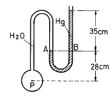
51. 폭이 10m인 구형 수로에 유속 3m/sec로 30m3/sec의 물이 흐른다. 이때 비에너지와 한계수심은 각각 얼마인가?
52. 우리나라 수자원의 특성이 아닌 것은?
53. 수두가 2m인 작은 오리피스(orifice)로 부터 유출하는 유량은? (단, 오리피스의 직경은 10㎝, 유속계수 0.95, 수축계수 0.8이다.)
54. 평행하게 놓여져 있는 관로에서 A점의 유속이 1m/sec, 압력이 5㎏/㎝2이고, B점의 유속이 2m/sec이라면 B점의 압력은?
55. 상온에 있는 물의 성질 중 틀린 것은?
56. 물에 대한 성질을 설명한 것으로 옳지 않은 것은?
57. 다음 그림에 표시된 위치에서 부체가 안정상태인 것은? (단, M : 경심, C : 부심, G : 무게중심이고 기호 표시는 위로부터의 순서를 말한다.)
58. 수조1과 수조2를 단면적(A)의 완전한 수중오리피스 2개로 연결하였다. 수조1로부터 상시 유량의 물을 수조2로 송수할 때 양수조의 수면차(H)는? (단, 오리피스의 유량계수는 C 이고, 접근유속수두(ha)는 무시한다.)
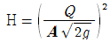
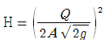
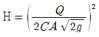
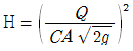
59. 구형수로에서 수리상 유리한 단면(hydraulic best section)은? (단, 구형수로의 폭은 b, 수심은 h, 단면적은 A 이다.)
60. 그림과 같은 유관(流管)에 물이 흐르고 있다. 단면Ⅰ에서의 유속이 1.5m/sec일 경우, 단면Ⅱ에서의 유속은? (단, 단면Ⅰ의 관지름 3.0m, 단면Ⅱ의 관지름 1.5m이다.)
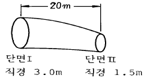
4과목: 철근콘크리트 및 강구조
61. 이론상 전단철근이 필요없지만 최소 전단철근량 Av = 3.5 (bw · s / fy)를 배치하도록 규정하고 있다. 계수전단력 Vu의 범위가 맞는 것은? (단, 강도설계법이고, Vc는 콘크리트가 부담하는 전단강도)
62. 그림과 같은 이음에서 리벳의 강도는 얼마인가? (단, 리벳지름 d = 22 mm, τa=1,000 kgf/cm2, σba =2,500 kgf/cm2)
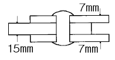
63. 강도설계법에서 보에 대한 등가깊이 a = β1C인데 fck가 450㎏/㎝2일 경우 β1의 값은?
64. 인장 이형 철근의 기본정착길이는 얼마인가? (단, 철근의 공칭지름 db = 2.54cm, fck = 270kgf/cm2, fy = 4000 kgf/cm2이다.)
65. 다음 그림과 같은 PSC 단순보에 프리스트레스 힘을 400tonf 작용했을 때 프리스트레스에 의한 상향력은?
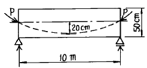
66. b = 30cm, d = 60cm인 단철근 직사각형보에서 유효하게 사용할 수 있는 최대 철근량은? (단, 균형 철근비 ρb = 0.0207 이고 강도 설계법임)
67. 리벳의 값을 결정하는 방법중 옳은 것은?
68. 철근콘크리트 구조물의 강도설계법에서 사용되는 하중계수에 대한 다음 설명 중 잘못된 것은?
69. 압축 부재의 설계시 고려해야 할 사항으로 옳지 않은 것은?
70. 앞부벽식 옹벽은 부벽을 어떤보로 설계하는가?
71. PSC에서 프리텐션 방식의 장점이 아닌 것은?
72. 그림과 같은 용접길이의 유효길이는 얼마인가?
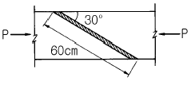
73. 시간과 더불어 진행되는 장기처짐은 탄성처짐에 λ 계수를 곱하여 사용한다. 이 때 λ 의 값으로 옳은 것은? (단, ξ 는 지속하중의 재하기간에 따른 계수이고, ρ '는 압축철근비를 의미한다.)
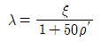
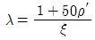
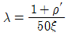
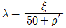
74. 보강재에 대한 설명 중 옳지 않은 것은?
75. 철근 concrete보에서 스터럽을 배근하는 이유는?
76. 인장을 받는 이형철근의 겹침이음에서 B급이음에 해당되면 이때 규정에 따라 계산된 인장정착길이 ℓd의 몇 배 이상의 겹침이음을 두어야 하는가?
77. 단면적 1000 cm2 인 콘크리트 단면의 도심에 단면적 19.6cm2 의 PS강선을 배치하고 인장력을 30tonf을 가할 때 콘크리트의 탄성 변형에 의한 인장력의 감소량은? (단, 탄성계수비 n = 7 이다)
78. b = 20 cm, d = 50 cm, As = 10cm2인 단철근 직사각형 보의 중립축 위치 c값은? (단, fck = 210 kgf/cm2, fy = 2800 kgf/cm2)
79. 다음 그림과 같은 단철근 직사각형 보에서 적합한 철근량 값은? (단, fck = 210 kgf/cm2, Mu = 70 tonf·m, 등가 사각형높이 15 cm, fy=3500kgf/cm2)
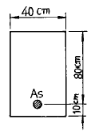
80. 다음 프리스트레스트 콘크리트(PSC)에 의한 교량 가설법 중에서 교대 후방의 작업장에서 교량 상부구조를 10~30m의 블록(block)으로 제작한 후, 미리 가설된 교각의 교축방향으로 밀어내고 다음 블록을 다시 제작하고 연결하여 연속적으로 밀어 내며 시공하는 공법은?
5과목: 토질 및 기초
81. 모래치환법에 의한 흙의 현장단위 체적중량 시험에서 모래를 사용하는 목적은 무엇을 알기 위해서인가?
82. 그림과 같이 2m × 2m되는 기초에 2.5t/m2의 등분포하중이 작용한다. 깊이 5m되는 지점에서 이 하중에 의해 일어나는 연직응력(△P)를 2 : 1분포법으로 구한 값은?
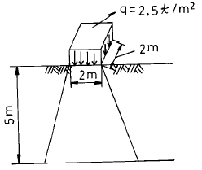
83. 어느 지반에 30㎝ × 30㎝ 재하판을 이용하여 평판 재하시험을 한 결과 항복하중이 7t, 극한 하중이 15t이었다. 이 지반의 허용 지지력은 다음 중 어느 것인가?
84. 그림에서 주동토압의 크기를 구한 값은? (단, 흙의 단위중량은 1.8t/m3이고 내부마찰각은 30° 이다.)
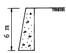
85. 어떤 시료에 대하여 일축압축 강도 시험을 실시한 결과 파괴강도가 3t/m2 이었다. 이 흙의 점착력은? (단, φ = 0° 인 점성토이다.)
86. 분할법에 의한 사면안정해석시에 제일 먼저 결정되어야 할 사항은?
87. 암석시편을 얻기위하여 시추조사를 실시하여 1.5m를 굴진하였다. 회수된 암석시편의 길이가 0.8m이며 그중 길이 10cm이상되는 시편길이의 합이 0.5m라고 할 때 이 암석시편의 회수율(rock recovery)는?
88. C.B.R 시험에 있어서 관입량 2.5㎜ 에 해당하는 표준하중강도는?
89. 어떤 점토시료를 일축압축 시험한 결과 수평면과 파괴면이 이루는 각이 48°였다. 점토시료의 내부마찰각은?
90. 포화점토의 일축압축 시험 결과 자연상태 점토의 일축압축 강도와 흐트러진 상태의 일축압축 강도가 각각 1.8㎏/㎝2, 0.4㎏/㎝2였다. 이 점토의 예민비는?
91. 말뚝의 지지력에 관한 다음 사항 중 틀린 것은?
92. 어느 모래층의 공극율이 40%, 비중이 2.65이다. 이 모래의 한계 동수 경사는?
93. 흙속의 물이 얼어서 빙층(ice lens)이 형성되기 때문에 지표면이 떠오르는 현상은?
94. 흐트러지지 않은 100% 포화된 시료의 체적이 20.5㎝3이고 무게는 33.2g이었다. 이 시료를 노건조 시킨 후 무게는 22.6g이었다. 간극비는?
95. 지표에 하중을 가하면 침하 현상이 일어나고 하중이 제거되면 원상태로 되돌아가는 침하를 무엇이라고 말하는가?
96. 표준관입시험(S.P.T) 결과 N치가 25이었고, 그때 채취한 교란시료로 입도시험을 한 결과 입자가 둥글고, 입도분포가 불량할때 Dunham공식에 의해서 구한 내부 마찰각은?
97. 다음 중 직접 기초라고 할수없는 기초는?
98. 모래층에 널 말뚝을 사용하여 물 막이를 한 곳이 있다. 분사 현상이 일어나지 않도록 하기 위하여 취한 조치 중 틀린 것은?
99. 지표면에 20t의 집중하중이 작용하는 경우, 깊이 4m 하중 작용 위치에서 2m 떨어진 점의 연직응력을 Boussinesq의 식으로 구한 값은? (단, 영향치는 0.2733임)
100. 다음 중 흙의 지지력과 직접적인 관계가 없는 시험은?
6과목: 상하수도공학
101. 혐기성 소화에 의한 슬러지 처리법에서 발생되는 가스 성분 중 가장 많이 차지하는 것은?
102. 용존산소에 대한 설명 중 옳지 않은 것은?
103. 다음 중 펌프의 양수량을 조절하는 방식이 아닌 것은?
104. ( )안에 알맞은 것으로 짝지어진 것은?
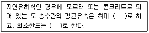
1⑤. 다음 오염물질과 인체에 관한 영향을 설명한 것 중 옳지 않은 것은?
106. 다음 중 계획급수 인구를 추정하기 위한 방법이 아닌 것은?
107. 수원을 지하수로 할 때 예상되는 물의 성질로 거리가 먼 것은?
108. 오수관거 및 합류관거에서 계획우수량에 대한 유속은?
109. 취수지점에 있는 A 수조에서 B수조와의 사이에 직경 500mm의 주철관이 1000m 부설되어 있다. A수조의 물이 자연 유하로 B수조로 도수될 때 B수조에 유입되는 유량은 얼마인가? (단, 마찰손실만을 고려할때 손실계수 f = 0.01 이다.)
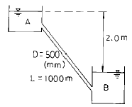
110. 도시하수가 하천으로 유입되는 경우에 일어나는 현상으로 틀린 것은?
111. 정수처리시 염소살균제의 주입에 관한 다음 설명 중 적합하지 않은 것은?
112. 다음 중 수중 불순물의 분리조작에서 액체와 고체간의 이동에 따른 상간이동에 의한 분리조작과 거리가 먼 것은?
113. 암모니아성 질소(NH3-N) 1mg/ℓ 를 질산성 질소(NO3--N)로 산화하는데 필요한 산소량은 얼마인가?
114. 옥내 배수설비와 관계없는 설비는?
115. 최종침전지에서 슬러지 침강성을 조사한 결과 SS를 2,000mg/ℓ 함유하는 폭기조 혼합액 1ℓ 을 30분간 침전시킨 후 MLSS가 점유하는 부피는 150mℓ 이었다. SVI(슬러지 용적지수)와 SDI(슬러지밀도지수)는 각각 얼마인가? (순서대로 SVI, SDI)
116. 응집처리공정에서 원수의 특성에 알맞게 최적의 응집제 주입량과, 최적의 pH를 주입하기 위해 일반적으로 실시하는 시험은?
117. 도수관거로 1,000mm의 원형강관을 사용하고, 동수구배가 1/100일 때의 도수량은? (단, Manning 공식의 조도계수 n=0.01 이다.)
118. 합류식과 분류식 하수관거에 관한 설명 중 맞는 것은?
119. 하수관거의 부속설비에 대한 설명으로서 옳지 않은 것은?
120. SVI에 대한 설명으로서 가장 알맞는 것은?